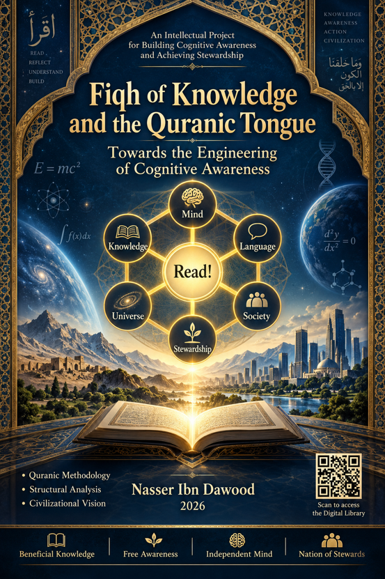

Nasser Ibn Dawood

Text extracted from the author-supplied Word edition; consult the original source.
Preparing the reader…
Fiqh al-Ilm wal Lisan al-Qur'ani
Towards the Engineering of Cognitive Consciousness
Author: Nasser Ibn Dawood
Year: 2026
I. The Global Knowledge Manifesto
Knowledge is a universal right. The author firmly believes that wisdom should not be locked behind paywalls or language barriers.
Global Access Policy: All books in this library are available for free in multiple digital formats (PDF, HTML, DOCX, TXT).
The Digital Library: As of early 2026, the collection hosts 68 volumes (34 in Arabic and 34 in English), fully optimized for AI-assisted research and digital archiving.
Official Platforms:
Main Website: nasserhabitat.github.io/nasser-books/
GitHub: nasserhabitat/nasser-books
II. Translator’s Note: The Bridge of Meaning
This English edition is a condensed conceptual adaptation. It is not a word-for-word translation, but rather an "extraction of essence." It presents the core philosophical framework in accessible English, omitting the exhaustive linguistic debates and classical references found in the original Arabic text.
For the academic researcher: The original Arabic version remains the primary source for comprehensive linguistic analysis, detailed exegesis (Tafsir), and the complete bibliography.
Table of Contents
Introduction: Cognitive Engineering and the Nation’s Exit from Dependency and Triviality
Part I: Cognitive Foundations and the Supreme Model
The Roots of Knowledge (Philosophy vs. Revelation)
The Duality of the Written and the Unwritten Book
The Prophetic "Ummiyyah" as Cognitive Purity
The Names of Allah and the Engineering of Certainty
The Philosophy of Guardianship and Epistemic Provision
Part II: The Blocking Front and Obstacles to Consciousness
Stages of Misguidance (Stones, Locks, and Cattle)
The Social Strata: The Hidden Elite (Jinn) and the Visible Masses (Ins)
The Engineering of Repression and the Assassination of the Innovating Mind
The Engineering of Triviality (The Chess Pieces)
Enemies of Scholars and the Opposite of God’s Allies
Part III: The Stewardship and Renaissance Function
The Position of Stewardship (The Scholar as God’s Vicegerent)
The Structural Function of Scholars in Society
The Battle for the Purification of Heritage
Defending Researchers and Experts
Conclusion: From the Jurisprudence of Knowledge to the Renaissance of the Nation
Appendix: The Cognitive Engineering Lexicon
Introduction: Cognitive Engineering and the Nation’s Exit from Dependency and Triviality
The modern world is not defined by a lack of information, but by a lack of cognitive structure. The mind has been hijacked by vast amounts of "data" that do not lead to wisdom. The author introduces a revolutionary framework: The Cognitive Engineering of Consciousness.
This book proposes that the Quran is not merely a book of religious rituals, but an Operating System for the human mind. It provides the "Data" (The Written Book) and the "Processing Unit" (the intellect and the universe), allowing the human being to achieve true Stewardship (Istikhlaf) on Earth.
The author argues that the modern "Nation" is trapped in a tunnel of Dependency (on foreign powers, on inherited dogmas) and Triviality (mass media, nonsense). The solution is to re-engineer the internal cognitive software of the individual and the society by returning to the original, pure linguistic roots of the Quranic concepts, stripping away centuries of accumulated human "debugging errors" (heritage).
Part I: Cognitive Foundations and the Supreme Model